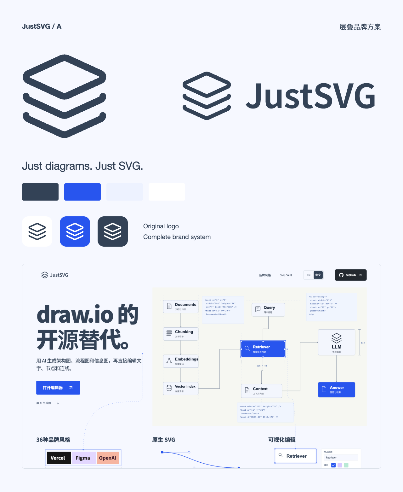
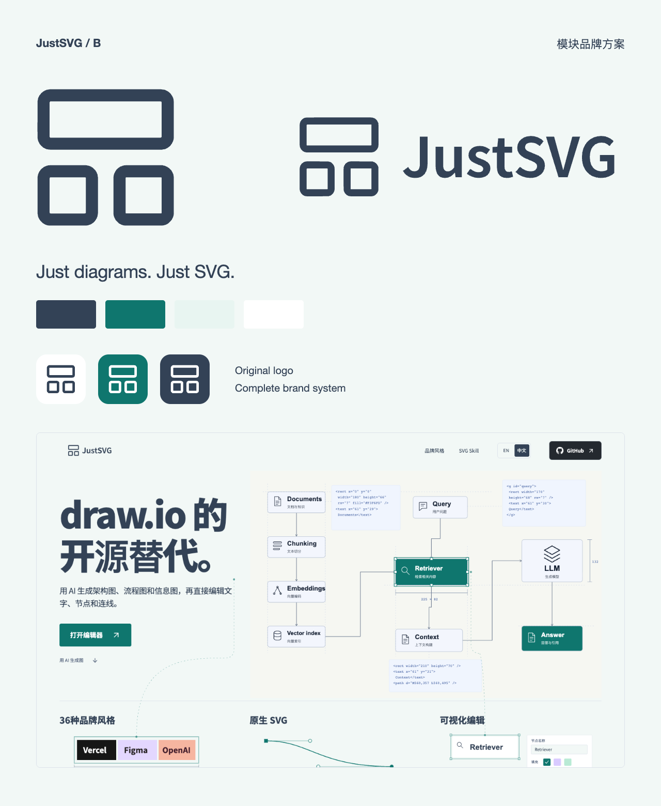

A · 层叠清楚的层级，连续的思路。以蓝色为强调色，用有节奏的间距与浅色平面组织信息。8 页手册 · 官网与编辑器实景 · SVG / PNG / 图标 · 字体与设计变量查看完整方案品牌手册 PDF完整资源 ZIP
B · 模块独立的模块，完整的系统。以青绿色为强调色，用明确的分区与对齐建立秩序。8 页手册 · 官网与编辑器实景 · SVG / PNG / 图标 · 字体与设计变量查看完整方案品牌手册 PDF完整资源 ZIP